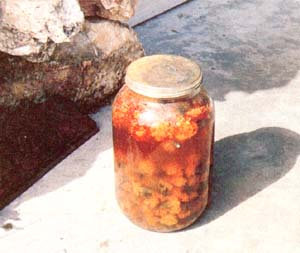
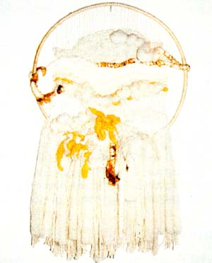

The sun's free energy will heat your home, steep your tea ... and even tint your textiles!
The next time you take down a pair of curtains and notice that they've become sun-streaked and faded, take heart! What ol' Sol hath bleached, he can also dye ... with just a little help from a handy householder. Solar dyeing-using natural colorings-is one of the simplest and loveliest ways to keep the hues of summer alive all year round. Furthermore, this technique has several distinct advantages over the usual simmered-on-the-stove method: It's easy . . . it's inexpensive ... and yes, it's also fun to do! In addition, the colors produced are softer, and-perhaps best of all-there are none of the pungent odors associated with stovetop dyeing.
The solar method is a variation of natural dyeing, since both call for the extraction of color from such vegetable materials as wild or cultivated flowers, berries, tree bark, and herbs. To make these hues permanent, it's necessary to use a chemical agent known as a mordant, which interacts with the dye and fibers, causing the two elements to bond.
Mordants not only make dye colors permanent . . . they can produce shades that are darker, brighter, grayer, or altogether different from the hue of the source. Among the common mordants are alum (potassium aluminum sulfate or ammonium aluminum sulfate), which is used in conjunction with cream of tartar and gives a tint close to that of the natural dye plant ... iron (ferrous sulfate), which will add gray to any shade ... tin (stannous chloride), which makes colors bright ... and copper (cupric sulfate), which gives the dyed fibers a greenish cast. With the exception of alum and cream of tartar, these mordants must be ordered through a pharmacist or a scientific supplies catalog. And remember: Many of the substances are poisonous, and therefore they must be kept away from children and animals!
For traditional natural dyeing, the yarn or fabric is simmered for hours-first in the mordant solution, then in the dye-in a kettle on the stove. For solar dyeing, on the other hand, the "stove" is the sun, and the "simmering" process takes several days ... but no more work is required of the dyer than a daily stirring of the brew.
Materials that can be used for color include such things as walnut hulls and bark, goldenrod flowers, red sumac berries, birch leaves, rhubarb stalks, and marigold petals. [EDITOR'S NOTE: See the article on page 181 for other suggestions.] There are literally hundreds of possibilities ... in fact, much of the fun of dyeing comes from experimenting with various plants and mordants to discover the range of tints that can be achieved.
Wool accepts color well, so yarn is a good choice for your first project. To dye enough yarn for a small knitted or crocheted item (such as a child's cap or a pair of baby boo tees), you'll need a one-gallon glass jar (plas tic just doesn't let the sun through well enough) with a lid, some alum and cream of tartar, four ounces of white wool, and-to provide the coloring-three-quarters of a gallon (more or less) of tightly packed marigold petals.
Gallon jars can usually be obtained free from a local drive-in or cafeteria (such outlets purchase mayonnaise or pickles in them). Alum and cream of tartar can easily be found at a grocery or drugstore. White 100% wool can likely be bought from most yarn or craft shops. And finally, your own garden, and your friends' and neighbors' yards, will probably be your sources of marigold petals. (To produce the best color possible, the flowers should be picked when they're in full blossom, and the petals stripped off and used right away.) Fortunately, marigolds are prolific bloomers, and cutting the mature flowers encourages the development of even more blossoms, so your experiment won't denude anyone's garden for long.
Once you've gathered all your materials, rewind the four ounces of yarn by wrapping it around the back of a kitchen chair (or looping it around your hand and elbow) to form a loose coil. Then, using white string -which won't muddy the dye-tie the coil here and there, in just enough places to hold it together. Next, thoroughly clean the jar and lid, then put in 1/4 teaspoon of alum and 1/8 teaspoon of cream of tartar ... and fill the container half full of lukewarm water, stirring it until the mordant is completely dissolved. Now, add the coil of wool yarn to the jar and pour in the fresh marigold petals to within one inch of the top. Add more water until all the ingredients are covered (you'll probably want to press down the petals and add more, if needed, while you're pouring in the water). When that'sdone, stir the combination with a long stick, put on the lid, and set the jar outside in a sunny spot.
Leave the container in place for about ten days (and nights), stirring the contents once each day. At the end of the ten-day period, remove the yarn and rinse it in lukewarm water until the fluid runs clear. Then gently squeeze (do not wring) the excess liquid from the yarn, and dry it-spread out flat-on an old) clean towel. Depending upon the humidity and such, drying can take anywhere from two to four days.
Part of the fun of solar dyeing is in seeing the unusual colors that often result, since the final hue will depend upon such factors as weather conditions and the amount of sunlight available, as well as upon the natural materials you use. For instance, my first marigold-dyed wool turned out to be not the expected yellow, but a bright lime green! You can also vary the shades by performing the steps of the process in a different order, by changing mordants, or by cooking the dyestuffs and yarn before setting them out to steep together. In this craft, one possibility leads to another ... but do be sure to color enough yarn or fabric at one time to make whatever finished item you're aiming at-even if this means setting out four or five jars at once-because two consecutive batches could turn out to be quite different!
This year, why not preserve the beauty of nature's bounty in some subtly colored knitwear? With the sun's help, this is one dye-it everyone can enjoyl
EDITOR'S NOTE: There are many fine books available on natural dyeing. Two that the author of this article recommends are Dye Plants and Dyeing: A Handbook by Ethel lane Schetky and Carol Woodward (1978), and Natural Plant Dyeing by Palmy Weigle and Mollie Rodriguez (1978). Both publications are available from the Brooklyn Botanic Garden (Dept. TMEN, 1000 Washington Avenue, Brooklyn, New York 11225) and cost $3.05 apiece, including postage. Another valuable guide is Create Your Own Natural Dyes by Kathleen Schultz (Sterling, 1975, $6.95), which is available at your local bookstore or through Mother's Bookshelf (restricted) (see page 123 for ordering information).
|
 ABOVE: Woolen yarn steeps in a jar full of marigold mix. |
 ABOVE: A shaggy-fringed wall hanging made with gold solar-dyed wool. |
|